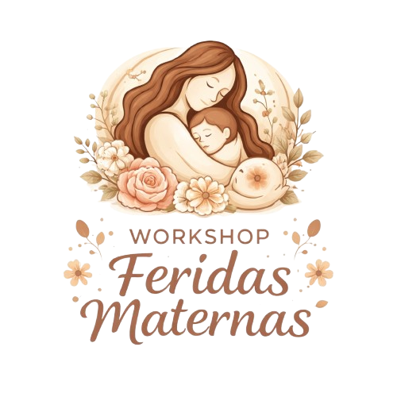

.png)
Um olhar sistêmico sobre vínculos, emoções e heranças invisíveis
Um mergulho profundo para curar padrões emocionais, desbloquear sua vida e se abrir para a prosperidade
Quero me inscrever Um olhar sistêmico sobre vínculos, emoções e heranças invisíveis
Um mergulho profundo para curar padrões emocionais, desbloquear sua vida e se abrir para a prosperidade
Quero me inscreverA forma como nos relacionamos com nossa mãe influencia diretamente nossa vida emocional, nossos relacionamentos, nossa autoestima e até nossa prosperidade.
Neste workshop, você será conduzido a um olhar profundo e sistêmico para compreender padrões invisíveis, lealdades familiares e emoções não resolvidas que podem estar travando sua vida.
Libere dores profundas ligadas à sua história
Destrave sua vida financeira e emocional
Pare de repetir histórias que não te pertencem
Para quem sente que está travado na vida, repete padrões nos relacionamentos, tem dificuldade com autoestima ou prosperidade, ou deseja compreender profundamente sua história emocional e familiar.

Data: 31 de Maio de 2026
Horário: 9h30 - 11h30
Investimento: R$ 180,00
Esse pode ser o início de uma nova forma de viver, sentir e se relacionar.
Garantir minha vaga